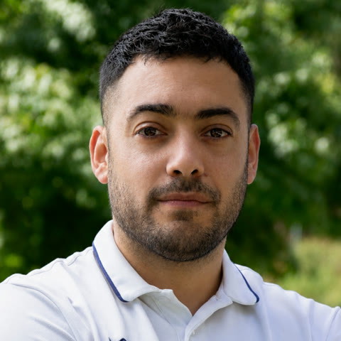
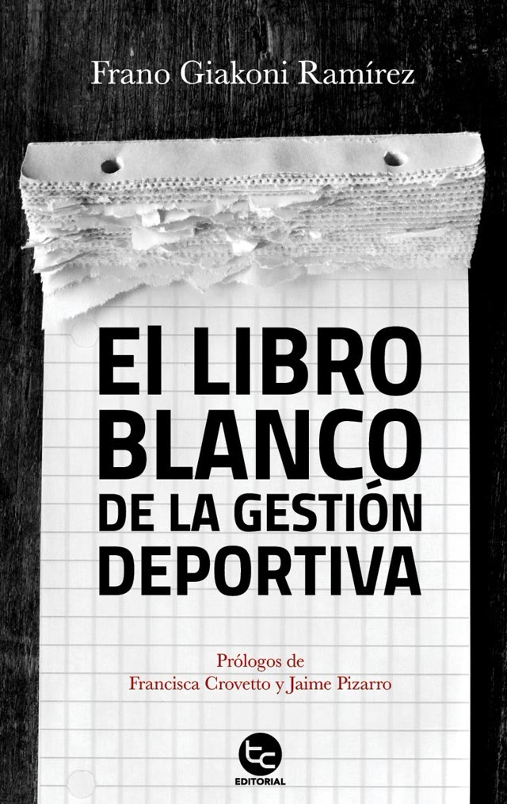
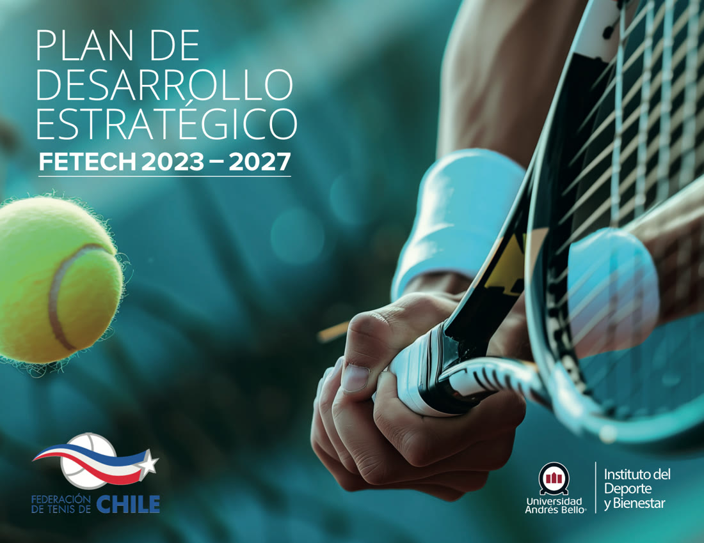
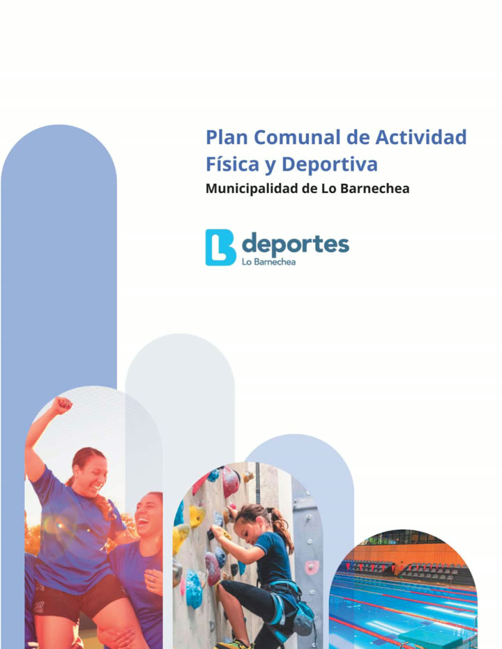
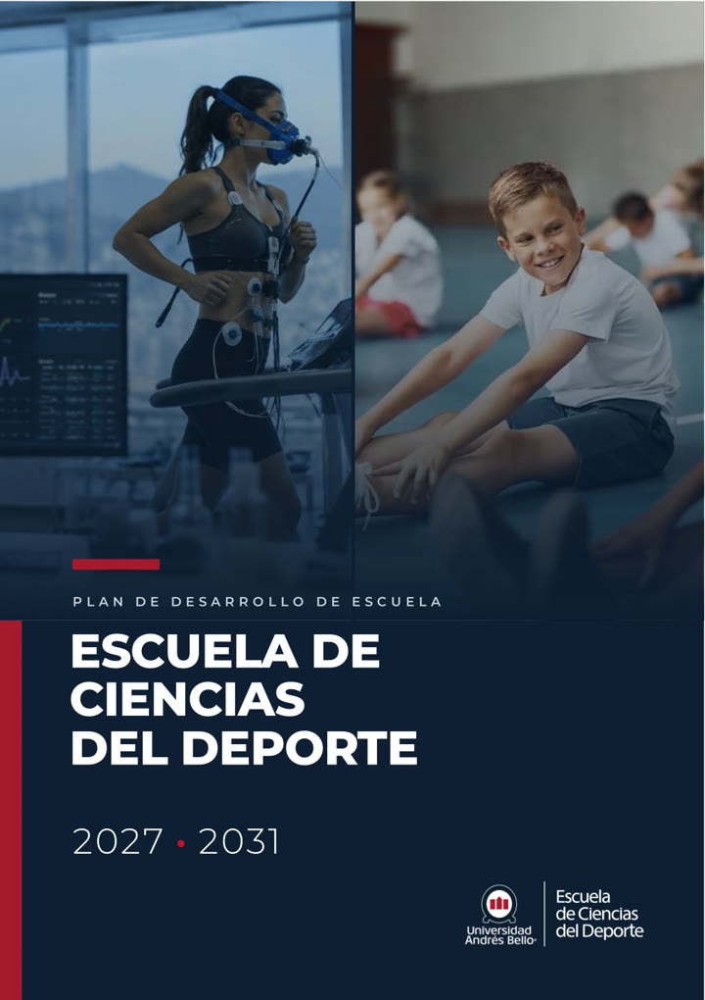

Frano Giakoni Ramírez
Doctor en Ciencias del Deporte. Estudio cómo se gestiona el deporte y cómo sus audiencias miran, sienten y deciden. PhD in Sport Sciences. I study how sport is managed, and how its audiences look, feel and decide.
- Director del Magíster en Gestión DeportivaDirector, Master’s in Sport Management Universidad Andrés Bello
- Autor de El Libro Blanco de la Gestión DeportivaAuthor of El Libro Blanco de la Gestión Deportiva Primer libro chileno de gestión deportiva · Editorial TrayectoChile’s first sport management book · Editorial Trayecto
- PresidentePresident ALGEDE · Asociación Latinoamericana de Gerencia Deportiva
- DirectorEditor-in-chief Latin American Journal of Sports Management
Más de 170 publicaciones científicas, 1.030 citas, índice h 15 e índice i10 de 28. More than 170 scientific publications, 1,030 citations, an h-index of 15 and an i10-index of 28.
Fuente: Google Scholar, actualizado el 19-10-2026.Source: Google Scholar, updated 2026-10-19. Google Scholar ↗
- Google Scholar 1.030 citascitations · h 15
- Scopus 93 documentosdocuments · 453 citascitations · h 10
- ResearchGate 712 citascitations · 34.379 lecturasreads
- ORCID 0000-0002-2685-8991
Scopus y ResearchGate: datos de octubre de 2026. Scopus Author ID 57221557438.Scopus and ResearchGate figures as of October 2026. Scopus Author ID 57221557438.

Primer libro chileno de gestión deportivaChile’s first sport management book
El Libro Blanco de la Gestión Deportiva
El primer libro de gestión deportiva escrito en Chile: una propuesta para profesionalizar la gestión del deporte, presentada en foros de Latinoamérica como el Foro Iberoamericano de la Gerencia Deportiva (Quito, 2020).The first sport management book written in Chile: a proposal to professionalise how sport is run, presented at Latin American forums such as the Ibero-American Sport Management Forum (Quito, 2020).
- AutorAuthor
- Frano Giakoni Ramírez
- PrólogosForewords
- Francisca Crovetto · Jaime Pizarro
- EditorialPublisher
- Editorial Trayecto, Chile
- DistinciónRecognition
- Seleccionado para las bibliotecas escolares CRA del Ministerio de EducaciónSelected for the Ministry of Education’s CRA school libraries
- ISBN
- 978-956-6083-13-9
Planes de desarrollo que diseñéDevelopment plans I designed
Del diagnóstico a la hoja de ruta: planes estratégicos para una federación, un municipio y una escuela universitaria.From diagnosis to roadmap: strategic plans for a national federation, a municipality and a university school.



También diseñé la carrera Sports Business (Ingeniería en Negocios Deportivos) de la UNAB, en 2025.I also designed UNAB’s Sports Business degree in 2025.
Líneas de investigaciónResearch lines
-
Gestión deportiva, esports y neuromarketingSport management, esports & neuromarketing
Competencias de gestores, calidad de servicios, impacto de grandes eventos y planificación estratégica; y la eficacia publicitaria y el patrocinio en esports, medidos con neuromarketing (mirada y respuesta cognitiva y emocional).Manager competencies, service quality, the impact of major events and strategic planning; plus advertising and sponsorship effectiveness in esports, measured with neuromarketing (gaze, cognitive and emotional response).
-
Realidad virtual y actividad físicaVirtual reality & physical activity
Ejercicio en entornos inmersivos y sus efectos en la condición física y la composición corporal.Exercise in immersive environments and its effects on fitness and body composition.
-
Actividad física y saludPhysical activity & health
Condición física, bienestar y salud mental en escolares, universitarios y personas mayores en Chile, con modelos estadísticos y machine learning.Fitness, well-being and mental health in Chilean schoolchildren, students and older adults, using statistical and machine-learning models.
PublicacionesPublications
Ninguna publicación coincide con esa búsqueda.No publication matches that search.
TrayectoriaCareer
«Formar de la mejor manera a quienes liderarán la profesionalización y la transformación del deporte chileno.»“To train, as well as we possibly can, the people who will lead the professionalisation and transformation of Chilean sport.”
Dirección académicaAcademic leadership
- Director del Magíster en Gestión DeportivaDirector, Master’s in Sport ManagementUniversidad Andrés Bello · programa creado en 2004Universidad Andrés Bello · programme founded in 2004
- Director de Carrera Entrenador Deportivo, pregrado (Licenciatura en Ciencias del Deporte)Programme Director, undergraduate Sports Coaching (BSc in Sport Sciences)Universidad Andrés Bello, Santiago
- Director de Carrera Entrenador Deportivo, modalidad AdvanceProgramme Director, Sports Coaching (Advance, for working adults)Universidad Andrés Bello
- Claustro del Doctorado en Educación y SociedadFaculty, PhD in Education and SocietyUniversidad Andrés Bello
- Consejo consultivo, Facultad de Organización DeportivaAdvisory board, Faculty of Sport OrganisationUniversidad Autónoma de Nuevo León, México
- Académico investigador, jornada completaFull-time academic researcherUniversidad Autónoma de Chile, Temuco
- Coordinador de investigación del Centro de Investigación y Formación en Esports (CIFeS)Research coordinator, Esports Research and Training Centre (CIFeS)UCAM, Murcia, EspañaUCAM, Murcia, Spain
- Jefe del Departamento de Deporte, Arte y CulturaHead of Sport, Art and CultureLiceo Bicentenario Marítimo de Valparaíso
Docencia de postgradoGraduate teaching
- Diseño y Evaluación de Proyectos Deportivos · Magíster en Gestión DeportivaSport Project Design and Evaluation · Master’s in Sport ManagementUniversidad Andrés Bello
- Gestión y Liderazgo Deportivo · Magíster en Rendimiento DeportivoSport Management and Leadership · Master’s in Sport PerformanceUniversidad Andrés Bello, Viña del Mar
- Profesor tutor de tesis · MBA Sports ManagementThesis supervisor · MBA Sports ManagementUCAM, EspañaUCAM, Spain
- Marketing, neuromarketing deportivo y esports · Diplomado en Gestión DeportivaSport marketing, neuromarketing and esports · Diploma in Sport ManagementPontificia Universidad Católica de Valparaíso
- Profesor del primer Diplomado Latinoamericano en Gestión DeportivaLecturer, first Latin American Diploma in Sport ManagementALGEDE · U. de Antioquia · U. de Pereira · PUCV · Escuela Nacional del Deporte
- Profesor tutor · Diplomado en Gestión Deportiva MunicipalTutor · Diploma in Municipal Sport ManagementPUCV · Subsecretaría de Desarrollo Regional
Asesorías y consultoríaAdvisory and consulting
- Plan de desarrollo estratégico 2023–2027 y manual de gestión organizacional2023–2027 strategic development plan and organisational management manualFederación de Tenis de ChileChilean Tennis Federation
- Plan Comunal de Actividad Física y Deportes 2026–2030Municipal Physical Activity and Sport Plan 2026–2030Municipalidad de Lo Barnechea
- Plan de desarrollo 2027–2031 de la Escuela de Ciencias del Deporte2027–2031 development plan, School of Sport SciencesUniversidad Andrés Bello
- Diseño de la carrera Sports Business (Ingeniería en Negocios Deportivos)Design of the Sports Business degreeUniversidad Andrés Bello
- Innovación curricular del Magíster en Gestión de la Actividad Física y DeportivaCurriculum redesign, Master’s in Physical Activity and Sport ManagementUniversidad Andrés Bello
- Institutional Project Leader · Entel University Esports ChileGGTECH Entertainment, LATAM
Docencia y gestión deportiva, 2008–2017Teaching and sport management, 2008–2017
Profesor de Educación Física de 7.º básico a 4.º medio en el Liceo Bicentenario Marítimo de Valparaíso, profesor de Didáctica en el Medio Acuático y Natación III en la UNAB, entrenador de natación, coordinador deportivo en Codelco Ventanas y productor del Campeonato Universitario Nacional Inter Físico de Natación (2008–2011). Physical education teacher (grades 7–12) at Liceo Bicentenario Marítimo de Valparaíso, lecturer in Aquatic Didactics and Swimming III at UNAB, swimming coach, sports coordinator at Codelco Ventanas and producer of the National University Swimming Championship (2008–2011).
FormaciónEducation
- Doctor en Ciencias del DeportePhD in Sport SciencesUniversidad Católica San Antonio de Murcia, España
- Estancia predoctoral · Programa eSportsNSPredoctoral stay · eSportsNS programmeCentre for the Science of Learning & Technology (SLATE), Universidad de Bergen, NoruegaCentre for the Science of Learning & Technology (SLATE), University of Bergen, Norway
- Estancia predoctoral · Neuromarketing y neurotecnologíaPredoctoral stay · Neuromarketing and neurotechnologyBitbrain, Zaragoza, España
- Estancia predoctoral · Gestión deportiva y estudios olímpicosPredoctoral stay · Sport management and Olympic studiesPontificia Universidad Católica de Valparaíso
- Magíster en Gestión de la Actividad Física y DeportivaMSc in Physical Activity and Sport ManagementUniversidad Andrés Bello
- Pedagogía en Educación Física · Licenciado en EducaciónBEd in Physical EducationUniversidad Andrés Bello
Investigación y edición científicaResearch and editorial roles
- Director de la Latin American Journal of Sports Management (ISSN 2542-3355)Editor-in-chief, Latin American Journal of Sports Management (ISSN 2542-3355)ALGEDE
- Consejo asesor y revisor · Journal of Sports Economics & ManagementAdvisory board and reviewer · Journal of Sports Economics & ManagementUniversidad de Valencia, EspañaUniversity of Valencia, Spain
- Revisor · Cultura, Ciencia y DeporteReviewer · Cultura, Ciencia y DeporteUCAM, EspañaUCAM, Spain
- Cofundador de iGEO, primer grupo de investigación en gestión deportiva de ChileCo-founder of iGEO, Chile’s first sport management research groupPontificia Universidad Católica de Valparaíso
- Investigador asociado, grupo GDOT (Gestión Deportiva, Ocio y Tecnología)Associate researcher, GDOT group (Sport Management, Leisure and Technology)UCAM, EspañaUCAM, Spain
Liderazgo gremialProfessional leadership
- PresidentePresidentALGEDE · Asociación Latinoamericana de Gerencia Deportiva
- Miembro del directorioBoard memberWorld Association for Sport Management (WASM)
- Director GeneralAGEDECH · Asociación de Gestoras y Gestores Deportivos de Chile
PremiosAwards
- Vocero Destacado UNABOutstanding Spokesperson, UNABReconocimiento a la divulgación de ciencia, deporte y gestiónFor communicating science, sport and management to the public
- Premio al Investigador InnovadorInnovative Researcher AwardVicerrectorías de Investigación y de Vinculación con el Medio, UNABVice-Rectorates for Research and Community Engagement, UNAB
- Premio al Liderazgo para la Gestión de CalidadLeadership for Quality Management AwardFacultad de Educación y Ciencias Sociales, UNAB (dos veces)Faculty of Education and Social Sciences, UNAB (twice)
- Primer lugar, Certamen Latinoamericano de Investigación en Deporte y Educación FísicaFirst place, Latin American Research Award in Sport and Physical EducationColegio Profesional de Licenciados en Entrenamiento Deportivo de México y Universidad de LondresMexican Professional Association of Sport Coaching Graduates and University of London
- Ganador, III Concurso de Innovación PedagógicaWinner, 3rd Teaching Innovation CompetitionUniversidad Andrés Bello
Tesis doctoralesDoctoral theses
- Director · «Del Aula a la Vida Activa»Supervisor · “Del Aula a la Vida Activa”Doctorado en Educación y Sociedad, UNABPhD in Education and Society, UNAB
- Evaluador externo · Neuromarketing y patrocinio deportivoExternal examiner · Neuromarketing and sport sponsorshipDoctorado en Ciencias del Deporte, UCAMPhD in Sport Sciences, UCAM
- Tribunal · Educación física escolar chilena (1927–2024)Examining committee · Chilean school physical education (1927–2024)Doctorado en Educación y Sociedad, UNABPhD in Education and Society, UNAB
Proyectos adjudicadosFunded projects
- Early, Senior & Workers Body CheckCuatro proyectos del fondo de Vinculación con el Medio, UNABFour community-engagement grants, UNAB
- IX Congreso Latinoamericano de Gestión Deportiva9th Latin American Sport Management CongressFondo de Diálogo y Fomento del Conocimiento, UNABKnowledge Dialogue and Promotion Fund, UNAB
Ponencias en 13 países, trazadas desde SantiagoTalks in 13 countries, traced from Santiago
Cada arco une Santiago de Chile con una ciudad donde he presentado. Pasa el cursor o toca un punto para ver la ponencia.Each arc joins Santiago de Chile with a city where I have spoken. Hover or tap a point to see the talk.
Archivo de eventosEvent archive
En los mediosIn the media
2025reconocido como Vocero Destacado de la UNAB por su aporte a la divulgaciónnamed Outstanding Spokesperson at UNAB for public outreach
Fuera del aulaBeyond the lecture hall
-
RadioaficionadoAmateur radio operatorComunicación por radio y su comunidad técnicaRadio communication and its technical community
-
WSET Level 2Certificación en vinos del Wine & Spirit Education TrustWine certification from the Wine & Spirit Education Trust